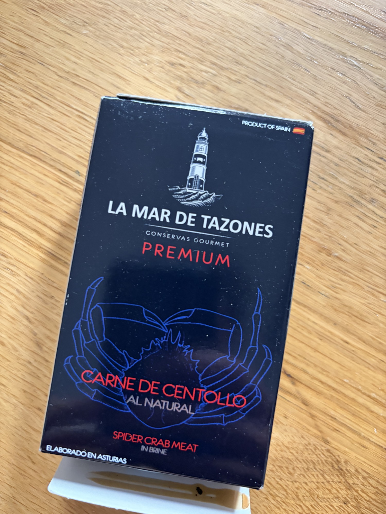

Spider Crab Meat
Carne de Centollo al Natural from La Mar de Tazones, Asturias.
What It Is
The European spider crab (Maja brachydactyla or Maja squinado), harvested from the Cantabrian Sea and Atlantic coast, particularly the Asturian and Cantabrian fisheries. La Mar de Tazones is a specialist producer from the fishing village of Tazones (Asturias), known for working with local, day-boat catch. The meat is hand-picked from cooked crabs and packed in brine or its own juices. Quality markers: visible strands of leg and claw meat (not ground or paste), pale pink-white color with no graying, clean sweet aroma, minimal shell fragments.
Nutritional Profile
Per 100g (drained):
- Calories: ~85–100 kcal
- Protein: 17–20g
- Fat: 1–2g
- Carbohydrates: ~0–1g
- B12, zinc, selenium, copper: excellent
- Sodium: ~400–550mg
Preparation & Service
Serve cool to lightly chilled — 10–14°C/50–57°F. The meat is delicate and will dry out if left exposed to air. Drain gently, reserving the liquor for a light dressing or a broth. Do not break the strands unnecessarily — the texture is the point. Do not heat directly in a pan — it will shred and dry. If a warm presentation is desired, fold the meat into a warm (not hot) sauce off the heat, or place it on a warm plate so it takes the temperature passively.
Traditional & Modern Eating Context
In Asturias and Cantabria, spider crab is a celebratory food, eaten fresh at marisquerías with tools and patience. The conserva is a luxury convenience — the work of picking has been done. Traditionally, the meat would be eaten simply, perhaps with a little mayonnaise. For VIP service, treat it like fresh-picked Dungeness or blue crab: as a hero ingredient in a salad, a stuffing, or atop a refined base.
Flavor & Texture
The texture is distinctly fibrous-stranded, with the leg meat presenting as fine, almost hair-like filaments that separate on the tongue, and the body meat as slightly larger, more scallop-like flakes. It is more delicate than king crab and more complex than snow crab. The flavor is sweet and distinctly crab-forward — not generic "seafood" but the particular nutty-sweet, faintly mineral taste of spider crab, with a clean finish and virtually no fishiness. The brine should enhance, not mask.
Pairings & Composition
- Wines: Aged Albariño, Godello, or a light Pinot Noir (for the sweet-mineral match)
- Bases: Avocado, endive leaves, butter lettuce, warm toast
- Sauces: Light mayonnaise with lemon, brown butter vinaigrette, or simply the packing liquor with olive oil
- Dish idea: Ensalada de centollo y aguacate — spider crab meat gently folded with diced avocado, thinly sliced radish, and a dressing of the reserved liquor, Arbequina oil, and yuzu juice. Serve in a ring mold on a chilled plate, topped with trout roe for color and saline pop.